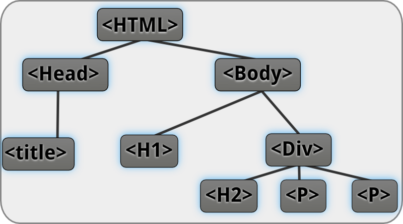
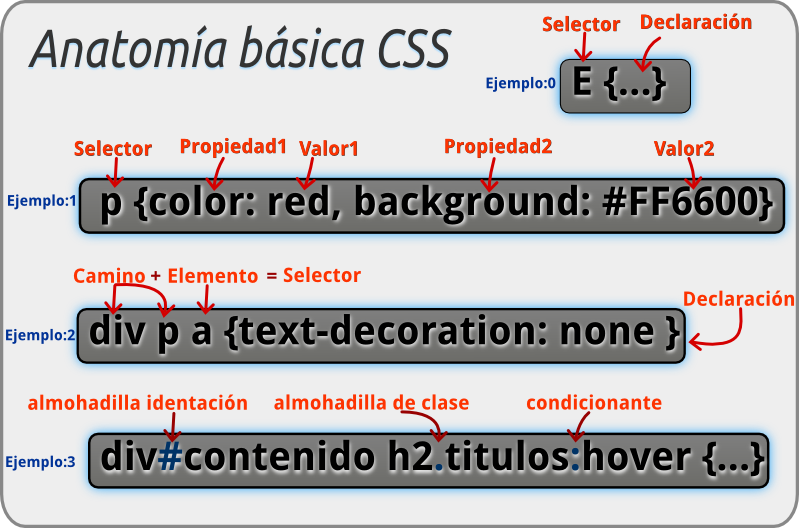
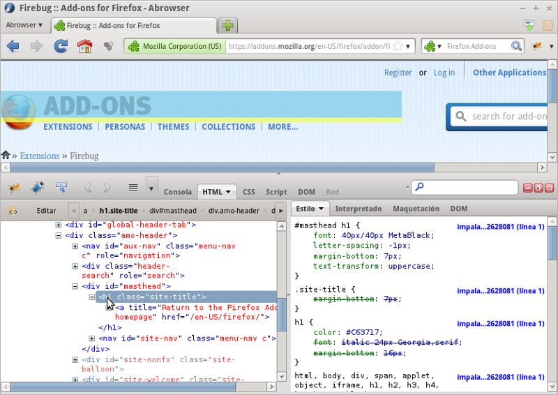
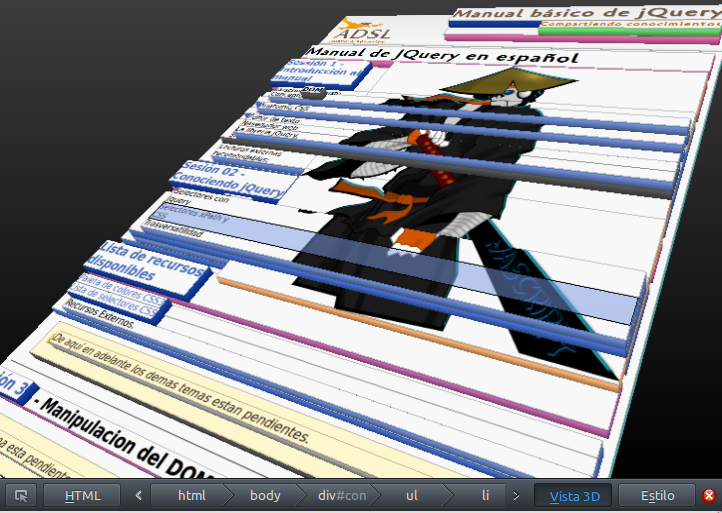
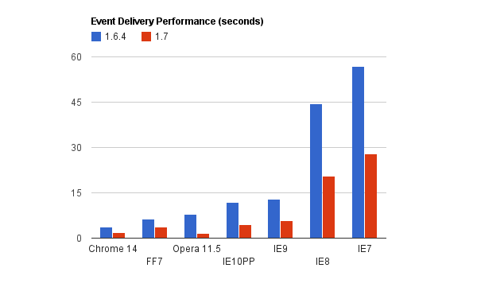

Sessión 1 - Introducción a jQuery
Descripción de este manual
Este es un pequeño manual básico de jQuery, el cual consta de 5 capitulos, esta diseñadado para una clase de 2 horas cada capitulo.
Este manual esta licenciado bajo atribución creative commons, si desear colaborar te invito a que visites el repositorio para que puedas ver las instrucciones para los colaboradores.
Breve referencia HTML
HTML, siglas de HyperText Markup Language («lenguaje de marcado de hipertexto»), hace referencia al lenguaje de marcado para la elaboración de páginas web. Se utiliza para describir la estructura y el contenido en forma de texto. El HTML se escribe en forma de «etiquetas», rodeadas por corchetes angulares (<,>). HTML también puede describir, hasta un cierto punto, la apariencia de un documento aunque resulta una practica más recomendable incluir hojas de estilos(CSS) para este proposito, tambien suele incluir scripts (como JavaScript), el cual puede afectar el comportamiento de navegadores web.
A lo largo de esta manual se usara XHTML1.0 estricto almenos que se diga lo contrario.
Concepto DOM
El Document Object Model o DOM ('Modelo de Objetos del Documento' o 'Modelo en Objetos para la Representación de Documentos'), proporciona un conjunto estándar de objetos para representar documentos HTML y XML, un modelo estándar sobre cómo pueden combinarse dichos objetos, y una interfaz estándar para acceder a ellos y manipularlos. A través del DOM, los programas pueden acceder y modificar el contenido, estructura y estilo de los documentos HTML y* XML*, que es para lo que se diseñó principalmente.
En otras parabras el DOM es una interfaz de programación de aplicaciones para acceder, añadir y cambiar dinámicamente contenido estructurado en documentos con lenguajes como ECMAScript (JavaScript).

El responsable del DOM es el World Wide Web Consortium (W3C).
Breve referencia CSS
Cascading Style Sheets (hojas de estilo en cascada). CSS es un lenguaje usado para definir la presentación de un documento estructurado escrito en HTML o XML2 (y por extensión en XHTML). El consorcio web W3C es el encargado de mantener la especificaciones.
Anatomía CSS
La anatomía de la sintaxis de CSS es la siguiente:

Con CSS podemos hacer declaraciones de estilo sobre los elementos HTML, para esto CSS ha definido una serie de selectores.
JQuery hace uso de estos selectores para interactuar con el DOM, por esta razón es importante que el lector comprenda CSS lamentablemente el alcance de este manual no contempla la explicación detallada de CSS. Sin embargo para nuestros fines nos basta con que conozcamos bien el uso de sus selectores por tal motivo he agregado una lista de selectores css.
Software a usar
Para desarrollar sitios de Internet con jQuery basicamente necesitamos 4 cosas:
- Editor de texto
- Navegador web.
- La libreria jQuery.
- Servidor web(para la sección
ajax,json).
1. Editor de texto:
El editor de texto es la herramienta básica para editar archivos: HTML, _javaScript y CSS. Hay muchos editores muy buenos y usted puede puede usar el editor de su agrado, entre los que recomendamos son los siguientes (ordenados según mis preferencias):
Sin embargo te recomiendo el geany el cual esta disponible para multiples Sistema operativos, ademas de agregarle el geany-web-ninja el cual es una colección de archivos de configuración orientadas al desarrollo web.
2. Navegador web:
Por cuestiones de pruebas te recomiendo que tengas todos los navegadores que esten disponibles en tu S.O., sin embargo para desarrollar/depurar te comiendo el firefox con la extensión firebug.

Otra de las ventajas que tiene es que a partir de la versión 11 de Mozilla Firefox, trae integrado el 3D inspector el cual nos permite analizar la profundidad de las capas CSS desde una forma muy gráfica, como podemos ver a continuación:

Otra razón para usar firefox es que es un proyecto de codigo libre y abierto, distribuyendose bajo triple licencia:
- Licencia Pública de Mozilla (MPL)
- Licencia pública general de GNU (GPL)
- Licencia pública general reducida de GNU (LGPL).
3. La libreria jQuery.
JQuery es una libreria en constante evolución, te recomiendo usar la libreria más reciente, ya que en cada nueva versión se integran caracteristicas nuevas al tiempo que se mejoran las anteriores, la imagen siguiente representa una compativa en el rendimiento de jQuery 1.6.4 VS jQuery 1.7.

4. Servidor web.
Un servidor web es un equipo que esta en la escucha del puerto http(80), para nuestros fines nos es suficiente con instalar apache web server, sin embargo cuando se habla de servidor web casi siempre se incluye apache, php y msql,si deseas tener todos estos paquetes los cuales te seran utiles a futuro te recomiendo instalar un xampp el cual esta disponible para:
- GNU/Linux
- Mac ©
- Windows ©
Introducción a jQuery
jQuery es una biblioteca de JavaScript, creada inicialmente por John Resig, que nos permite simplificar la manera de interactuar con los documentos HTML, manipular el árbol DOM, manejar eventos, desarrollar animaciones y agregar interacción con la técnica AJAX a páginas web.
Extracto: http://es.wikipedia.org/wiki/JQuery
Agregando jQuery
Una vez que tenemos la libreria jQuery más reciente, lo siguiente es incluir la libreria en nuestros documentos html, esto lo hacemos, agregando el script dentro de la cabecera del documento.
<head> <!-- agregando libreria jQuery --> <script type='text/javascript' src='js/jquery1.7.3.js'></script> </head>
Por otra parte tambien puedes agregar la libreria directo del servidor de google
Selectores con jQuery
Quizás la propiedad más significativa de jQuery es su flexibilidad para hacer consultas a través del DOM(de ahí el nombre).
jQuery basicamente nos permite hacer 3 tipos de consultas:
- [Consultas CSS]
- Consultas xPath
- [Consultas Trasversales]
Por cuestiones del alancance de este manual, sólo veremos las consultas CSS y algunos metodos trasversales, dejando un poco de lado las consultas xPath ya que casi no se usan pero es bueno que el lector sepa que existen y que tambien son una forma de acceder a los elementos.
En el capitulo pasado conocimos la anatomia de CSS si usted tiene alguna duda sobre los selectores CSS que usaremos le invito a consultar la siguiente tabla:
Trasversatilidad
La transversatilidad es un conjunto de metodos definidos por jQuery para refinamiento de selectores, para explicar esto ocuparemos 2 funciones.
- find: Nos permite realizar una consulta sobre un objeto jQuery.
- filter: Nos permite realizar un filtrado, descartando elementos, sobre un objeto jQuery.
Imaginemos que tenemos una tabla que tiene como atributo id el valor idTabla, el cual queremos accecer a todos sus elementos th, una forma de hacerlo seria:
$("#idTabla th").css('background', '#ddd');
Otra alternativa es usar el metodo find para buscar en un objeto de jQuery el cual me representa una rama del DOM.
$("#idTabla").find('th').css('background', '#ddd');
Lista de ejemplos:
Lecturas externas recomendables:
Sesión 2 -Caracteristicas principales de jQuery.
Trabaja por grupos(Iteración implicita).
Una carácteristica muy interesante es que los metodos de jQuery que realizan una consulta trabajan con iteración implicita, por ejemplo, la consulta.
$('h2')
Nos devuelve todos los titulos nivel 2 (h2) que esten en la página, ahora si por ejemplo quisieramos cambiarle el color a un gris obscuro (#333), esto lo podriamos hacer de la siguiente manera.
$.each($('h2'), function() {
$(this).css("color", "#333");
});
En este caso estamos ocupando el metodo each el nos dice que para cada titulo en la selección ejecuta una función la cual le cambia el color.
De momento no se preocupe en comprender el each, lo importante es que comprenda que estamos iterando explicitamente para realizar determinada acción sobre cada elemento en la selección.
Existe una forma de hacer esto más fácil y es ocupando este comportamiento de trabajar por grupos de jQuery, en este caso la función css puede trabajar sobre toda una selección:
$('h2').css('color', '#333');
En general las funciones que tengan esta forma:
$('selector').funcionNombre(param1,param2,...);
Trabajan sobre toda la selección, es decir si la selección es todo un grupo la función se ejecutara sobre todos los elementos. A esta funciones las llamaremos jQuery.fn.funcionNombre o bien su forma reducida $.fn.funcionNombre ya que pertenecen al espacio de nombre fn de jQuery.
Cuando hacemos referencia a jQuery.fn se hace referencia al espacio de nombre de jQuery del prototipo es decir de una extensión de jQuery, jQuery.fn es también un alias de jQuery.prototype .
Diseñado para realizar consultas atraves del DOM.
Quizas la principal caracteristica de jQuery es que esta diseñado para realizar consultas a travez de el DOM, como ya se menciono antes, jQuery nos permite realizar consultas CSS, xPath y trasversales.
$('h2 + p').css('color', '#946900');
$('h2 + p').css('font-style', 'italic');
Con esto indicamos que todo parrafos(p) inmediatamente seguidos(+) de un titulo nivel 2(h2), va a tomar el color de la letra a café y el estilo de la fuente sera del tipo italica.
No abuse de esta característica, la tarea de realizar una consulta atravez del DOM puede llegar a ser algo bastente complejo (dependiendo de la consulta).
Una mejor opción es almacenar la consulta realizada en una variable:
$parrafosBajoTitulo = $('h2 + p');
$parrafosBajoTitulo.css('color', '#946900');
$parrafosBajoTitulo.css('font-style', 'italic');
Es buena práctica agregar el prefijo
$a las variables que almacenan el resultado de una consulta.
Es un sistema modular.
Chaining.
Atienda al siguiente código:
$('h2').css('color','red');
$('h2').text('Cambiando el contenido a todos los elementos h2');
Ahora comparelo con el siguiente código:
$('h2')
.css('color','red')
.text('Cambiando el contenido a todos los elementos h2');
¿Cual cree que sea mejor?, argumente su respuesta.
Enlaces externos.
Sesión 3 - Manejo de eventos
Introducción a los eventos.
jQuery define una lista de eventos y funciones para la administración de los mismos, la sintaxis por defecto para un manejador de evento es de la siguiente forma $.fn.nombreEvento.
$('Selector').nombreEvento( function(){
//funcion que administra el evento.
//this es el elemento que disparo el evento.
}
Aquí es importante resaltar que this contendra la instancia del elemento que disparo el evento, por ejemplos si a los enlaces(a) le agregamos el evento click, this contendra la instancia del enlace especifo sobre del cual hallamos hecho click, analice el siguiente codigo.
Codigo HTML
<a class='testClick' href='#'>enlace 1</a>
<a class='testClick' href='#'>enlace 3</a>
<a class='testClick' href='#'>enlace 2</a>
Código jQuery
$('a.testClick').click( function(){
console.log( $(this).text() );
}
* Como puede ver *
En este caso mandaremos a la salida de la consola el contenido del enlace que se precione.
Comportamiento en cola.
Observe el siguiente código.
$("h1")
.click(function() {
console.log('Ejecución del manejador1 para el evento click del h1');
})
.click(function() {
console.log('Ejecución del manejador2 para el evento click del h1');
});
¿Que cree que suceda cuando le demos click a un h1 en esta página?.
La respuesta la podemos encontrar al reflexionar que sucede cuando mandamos a llamar miltiples veces el evento document.onReady. Lo que hace jQuery es ocupar una cola para administrar los eventos, de esta forma se pueden agregar multiples funciones sobre el mismo evento/elemento, sin más el resultado en la consola seria:
Ejecución del manejador1 para el evento click del h1
Ejecución del manejador2 para el evento click del h1
Borrando eventos función off.
Podemos desvincular los eventos con la función off po ejemplo para eliminar el evento click en H1 podriamos hacer.
$("h1").off('click');
Con esto eliminariamos todos los eventos click del h1, si quisieramos eliminar un unico evento click, podriamos hacer uso de los espacios de nombres.
Desde la versión 1.7 de jQuery,
Enlaces recomendados.
Sesión 4 - Efectos y modificaciones sobre el DOM.
insertbefore
$('<p>Test</p>').insertBefore('#selector');
before
$('#selector').before('<p>Test</p>');
insertafter
$('<p>Test</p>').insertAfter('#selector');
after
$('#selector').after('<p>Test</p>');
append
$('#selector').append('<p>Test</p>');
appendto
$('<p>Test</p>').appendTo('#selector');
fadeIn
$('%selector').fadeIn();
Tambien puede llevar un argumento como slow, fast.
$('%selector').fadeIn('slow');
ó agregar un valor en milisegundos.
$('%selector').fadeIn('slow');
Los valores de slow, fast, estan predeterminados en la libreria usted puede ver los valores, predeterminados de los efectos.
console.log($.fx.speeds);
Animate
Forma simple:
$("selector").animate('width', "500px");
Forma relativa:
$("selector").animate({"left": "+=50px"}, "slow");
Multiples parametros.
$("selector").animate({
width: "70%",
opacity: 0.4,
marginLeft: "0.6in",
fontSize: "3em",
borderWidth: "10px"
}, 1500 );
animate sobre un color.
Desgraciadamente efectos como los colores no funcionan del todo bien, anteriormente habia un plugin jquery-plugin-colorque nos ayudaba a realizar integrar comportamiento pero ya no le han dado mantenimiento, sin embargo una forma de realizar determinada característica es por medio de jQuery-Ui, del cual para este caso requerimos el nucleo jQuery-Ui (core), el nucleo de los efectos (Effects Core) , y finalmente la opción Effect "Highlight", una vez esto optenemos un archivo con el nombre jquery-ui-1.8.21.custom.min.js el cual contiene de forma compacta lo que requerimos, ahora lo siguiente es agregarla a la cabecera de nuestro archivo y hacer un tests:
Código HTML.
<div class="box"></div>
Código CSS.
div.box{
width: 100%;
height: 200px;
background:#666;
border:1px solid #999:
}
Código jQuery.
colors = ['#FFB30C', '#58EC00', '#0087EC', '#EEEEEE', '#FF5A00' ];
var i = 0;
$box = $('div.box');
animate_loop = function() {
$($box).animate({backgroundColor:colors[(i++)%colors.length]
}, 900, function(){
animate_loop();
});
}
animate_loop();
Resultado
show
forma simple.
$('selector').show();
forma con velocidad.
$('slector').show('fast');
hide
forma simple.
$('selector').hide();
forma con velocidad.
$('selector').hide('fast');
Lecturas recomendadas.
- Categoría efectos jQuery - http://api.jquery.com/category/effects/
- Manipulación jQuery - http://api.jquery.com/category/manipulation/
- Efectos jQuery-Ui - http://jqueryui.com/download
Sesión 5 - Ajax y buenas prácticas.
Ajax.
Ajax, acrónimo de Asynchronous JavaScript And XML (JavaScript asíncrono y XML), es una técnica de desarrollo web para crear aplicaciones interactivas o RIA (Rich Internet Applications). Estas aplicaciones se ejecutan en el cliente, es decir, en el navegador de los usuarios mientras se mantiene la comunicación asíncrona con el servidor en segundo plano. De esta forma es posible realizar cambios sobre las páginas sin necesidad de recargarlas, lo que significa aumentar la interactividad, velocidad y usabilidad en las aplicaciones.
En concepta parte del hecho que desde javascript podemos realizar solicitudes( httpRequests ) y que por medio que javascript no espera el resultado de dicha solicitud para continuar su flujo, veamos un ejemplo con javascript puro.
Opteniendo un httpRequests.
//regresa un Requests Object
function createRequestObject() {
var ro;
if (window.XMLHttpRequest) {
ro = new XMLHttpRequest();
} else {
ro = new ActiveXObject("Microsoft.XMLHTTP");
}
if (!ro)
debug("Couldn't start XMLHttpRequest object");
return ro;
}
Manejador de la respuesta.
function handleResponse() {
if (http.readyState != 4 && http.readyState != 3)
return;
if (http.readyState == 3 && http.status != 200)
return;
if (http.readyState == 4 && http.status != 200) {
clearInterval(pollTimer);
inProgress = false;
}
// In konqueror http.responseText is sometimes null here...
if (http.responseText === null)
return;
while (prevDataLength != http.responseText.length) {
if (http.readyState == 4 && prevDataLength == http.responseText.length)
break;
prevDataLength = http.responseText.length;
var response = http.responseText.substring(nextLine);
var lines = response.split('\n');
nextLine = nextLine + response.lastIndexOf('\n') + 1;
if (response[response.length-1] != '\n')
lines.pop();
for (var i = 0; i < lines.length; i++) {
// ...
}
}
if (http.readyState == 4 && prevDataLength == http.responseText.length)
clearInterval(pollTimer);
inProgress = false;
}
Usandolos
function startProcess(dataUrl) {
http = createRequestObject();
http.open('get', dataUrl);
http.onreadystatechange = handleResponse;
http.send(null);
pollTimer = setInterval(handleResponse, 1000);
}
Ajax y Jquery.
Ejemplo básico
$.ajax({
url: 'ajax/test.html',
success: function(data) {
$('.result').html(data);
alert('Load was performed.');
}
});
Quitando la opción asincrona.
Observe el siguiente código.
var datos = null;
$.ajax({
url: 'ajax/test.html',
success: function(data) {
datos = data;
}
});
console.log(datos);
Datos sera null, ya que la respuesta es asincrona es decir console.log() no espera la finalización de $.ajax para ejecutarse, hacer async igual a false resulta una opción util para esta logica.
var datos = null;
$.ajax({
url: 'ajax/test.html',
//detiene la ejecución.
async : false,
success: function(data) {
datos = data;
}
});
console.log(datos);
Otra opción para esperar que ajax se haya ejecutado para realizar determinada acción seria encaminar la funcion done como se muestra acontinuación.
var datos = null;
$.ajax({
url: 'ajax/test.html',
success: function(data) {
datos = data;
}
}).done(function( msg ) {
console.log(datos);}
);
Ejemplo Manejando el error.
Si somos detallistas nos daremos cuenta que console.log(datos); no garantiza que los datos no sean nulos, pues la respuesta puede llegar a fallar y en este caso tal vez deseamos rellenar a datos con valores por defecto.
var datos = null;
$.ajax({
url: 'ajax/test.html',
success: function(data) {
datos = data;
}
error: function() {
datos = {v1:'valor defecto 1', v2:'valor defecto 2'};
}
}).done(function( msg ) {
console.log(datos);}
);
Otras funciones Ajax
Existen otras funciones definas para manejar respuestas asincronas para una detallado mas extenso se recomienda consultar la categoria Ajax de la api de jQuery: